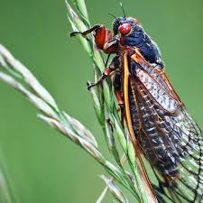

CICADA FACTS

Physical Traits
Large red or black eyes
Clear wings
Green, brown, or black body
Habitat
Temperate and tropical regions
Underground as nymphs
Adults live high on trees and shrubs

Diet
Tree sap and plant fluids
Uses piercing-sucking mouthparts
Nymphs drink root juices